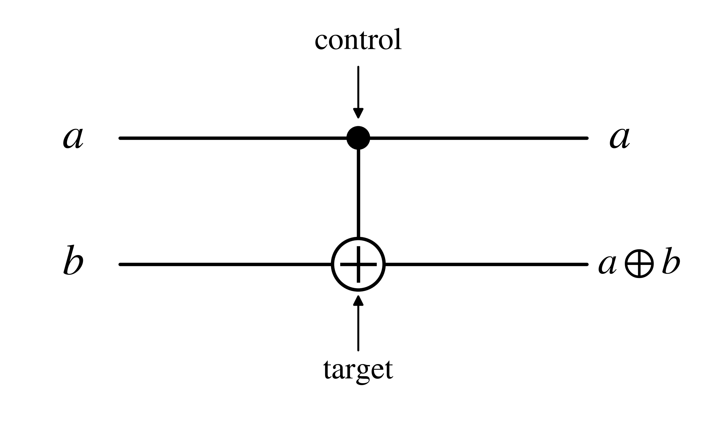
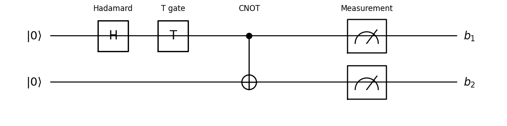

Quantum Circuits
Classical Reversible Gates
Lets start with something we are already familiar with: Boolean circuits. These circuits are often used to model
classical computation. They are composed of boolean gates, notably the AND, OR, and NOT gates, which are used to perform boolean operations on bits.
We call a gate reversible if it is an injection from the set of possible inputs to the set of possible outputs. In practice, most reversible gates are bijections.
Intuitively, a gate is reversible if given the output, we can determine the input.
The AND and OR gates, for example, are not reversible. Take our output as $0$. Then, AND($0$,$0$) = $0$ and AND($0$,$1$) = $0$, and there is no way to determine the input from the output.
The NOT gate is an example of a reversible gate. We can see that this gate is bijective: NOT($0$) = $1$ and NOT($1$) = $0$.
Next, we will define a crucial reversible gate: The CNOT (controlled-NOT) gate. It is defined as follows:
$$\mathrm{CNOT}(a,b) = (a, a \oplus b)$$ where $\oplus$ is the XOR operation. One can check that this gate is in fact bijective.
We call the first bit the control bit and the second bit the target bit. The target bit is flipped only when the first bit is a $1$.
We can represent the CNOT gate as the following diagram:

Fundamentally, quantum computation is built on top of reversible operations, with the CNOT gate being an important building block. Specifically, the laws of quantum mechanics necessitates that operations done to a quantum system are reversible. Intuitively, this means that a quantum system cannot destroy any information about its previous state as it changes. We will see in the next section that operations done on a quantum system are described by unitary transformations, which are always invertible. Note that this requirement only applies to quantum gates, but not to operations like measurements which can cause states to collapse.
One might wonder whether restricting ourselves to reversible operations limits our computational power. It turns out that this is not the case! Take some boolean function $f: \{0,1\}^n \to \{0,1\}^m$. This function can be simulated using a reversible function by introducing additional bits. Consider the function: $$(x,y) \mapsto (x,y \oplus f(x)),$$ where $x \in \{0,1\}^n$, $y \in \{0,1\}^m$. We can see that this function is reversible because applying it twice results in the original input. Now, if we set $y = 0^m$, we get the output $(x,f(x))$.
Unitary Transformations and Quantum Gates
In quantum computation, operations can be described by unitary matrices. A linear transformation $U:\mathbb{C}^{2^n}\to\mathbb{C}^{2^n}$ is called unitary if
$$
U^\dagger U=UU^\dagger=I,
$$
where $U^\dagger$ denotes the conjugate transpose of $U$, obtained by transposing $U$ and taking the complex conjugate.
An important property of unitary transformations is that they preserve inner products, and therefore lengths of vectors.
Therefore, if $|\psi\rangle$ is a unit vector, then $U|\psi\rangle$ is also a unit vector.
This means that applying a unitary transformation to a quantum state results in another quantum state with norm 1.
It turns out that every reversible classical gate can be represented as a unitary transformation. A reversible classical gate on $n$ bits can be seen as is a bijection $f: \{0,1\}^n \to \{0,1\}^n$.
Since $f$ is a bijection, it permutes the possible input bit strings. For example, the classical NOT gate swaps $0$ and $1$.
Now, recall that each $n$-bit string $x$ corresponds to a computational basis state $|x\rangle$ in $\mathbb{C}^{2^n}$. We can represent a reversible classical gate $f$ by defining a unitary transformation $U_f$ such that
$$
U_f|x\rangle=|f(x)\rangle.
$$
$U_f$ performs exactly the same operation as $f$, but on computational basis vectors rather than bit strings. For example, consider the CNOT gate from the previous section.
We can represent it as the following unitary transformation:
$$
\mathrm{CNOT}=
\begin{pmatrix}
1&0&0&0\\
0&1&0&0\\
0&0&0&1\\
0&0&1&0
\end{pmatrix}.
$$
Notice that each column of this matrix is a unique computational basis vector. In fact, the columns are exactly the outputs of $\mathrm{CNOT}$ on the basis states $|00\rangle,|01\rangle,|10\rangle,|11\rangle$, respectively.
Matrices of this form are called permutation matrices. Because their columns form an orthonormal basis, permutation matrices are always unitary.
Hence, every reversible classical gate can be represented by a unitary transformation.
However, quantum gates are more powerful: instead of permuting computational basis states, they can transform them into superpositions.
The Hadamard Gate
One of the fundamental quantum gates is the Hadamard gate, denoted by $H$. It is a single-qubit gate represented by the matrix $$ H=\frac{1}{\sqrt2} \begin{pmatrix} 1&1\\ 1&-1 \end{pmatrix}. $$ Its action on the computational basis states is $$ \begin{aligned} H|0\rangle&=\frac{|0\rangle+|1\rangle}{\sqrt2},\\ H|1\rangle&=\frac{|0\rangle-|1\rangle}{\sqrt2}. \end{aligned} $$ Notice that unlike reversible classical gates, the Hadamard gate maps computational basis states to superpositions of multiple basis states. Applying $H$ to $|0\rangle$ produces an equal superposition of $|0\rangle$ and $|1\rangle$. Measuring this resulting state in the computational basis gives either outcome with probability $1/2$.The Hadamard gate also has the interesting property that $H^2=I$. Therefore, applying it twice returns any single-qubit state to its original state.
The T Gate
Another important single-qubit gate is the T gate, also known as the $\pi/8$ gate. It is represented by the matrix $$ T= \begin{pmatrix} 1&0\\ 0&e^{i\pi/4} \end{pmatrix}. $$ Its action on the computational basis states is $$ \begin{aligned} T|0\rangle&=|0\rangle,\\ T|1\rangle&=e^{i\pi/4}|1\rangle. \end{aligned} $$ Unlike the Hadamard gate, the T gate does not create a superposition. Instead, it introduces a phase shift (a rotation of the qubit on the complex unit circle) while preserving the magnitude of the amplitude. $$ |\psi\rangle=\frac{|0\rangle+|1\rangle}{\sqrt2}. $$ We obtain the following: $$ T|\psi\rangle= \frac{|0\rangle+e^{i\pi/4}|1\rangle}{\sqrt2}. $$ Notice that the probabilities of measuring $|0\rangle$ and $|1\rangle$ remain $1/2$. However, the relative phase or angle between their amplitudes has changed. Although this phase difference does not immediately affect measurement probabilities in the computational basis, it can affect the outcome of following quantum operations. This will become important when we discuss quantum interference.Together, the CNOT, Hadamard, and T gates provide examples of the different operations available in quantum computation: manipulating basis states, creating superpositions, and modifying the relative phases of amplitudes.
Quantum Circuits and the No-Cloning Theorem
Now that we have introduced quantum gates, we can use them to introduce a rigorous definition of
quantum circuits, which provide a mathematical model
for quantum computation. These circuits are very similar to Boolean circuits, consisting of
gates that perform operations on their inputs. However, there are a few differences between the two models.
A Formal Definition
Recall that a Boolean circuit can be represented as a directed acyclic graph (DAG), where vertices represent gates and edges represent the inputs and outputs of gates. We can model quantum circuits in the same way, with a few additional restrictions and changes.Formally, a quantum circuit on $n$ qubits is a directed acyclic graph consisting of $n$ input vertices, $n$ output vertices, and gate vertices labeled by $H$, $T$, or $\mathrm{CNOT}$, satisfying the following properties:
- Each input vertex has exactly one outgoing edge and no incoming edges. Similarly, each output vertex has exactly one incoming edge and no outgoing edges.
- Each gate vertex has the same number of incoming and outgoing edges. In particular, $H$ and $T$ have one incoming and one outgoing edge, while $\mathrm{CNOT}$ has two incoming and two outgoing edges.
- Each edge or wire represents the transfer of a qubit from one gate to another. Unlike Boolean circuits, quantum circuits do not allow a wire to branch off into multiple wires.
- The input and output wires of each gate are ordered. Specifically, the two input wires of a $\mathrm{CNOT}$ gate distinguish its control and target qubits.
Second, quantum information cannot be copied. In classical computation, we can take a bit and duplicate it. In quantum computation, however, this is not possible.
Theorem (No-Cloning Theorem). There does not exist a unitary transformation $U$ and a fixed auxiliary state $|\phi\rangle$ such that, for every quantum state $|\psi\rangle$,
$$ U(|\psi\rangle \otimes |\phi\rangle) = |\psi\rangle \otimes |\psi\rangle. $$Proof. Assume for the sake of contradiction that such a unitary transformation $U$ exists. Since $U$ can copy any quantum state, it must be able to copy both $|0\rangle$ and $|1\rangle$. Therefore, $$ \begin{aligned} U(|0\rangle \otimes |\phi\rangle) &= |00\rangle,\\ U(|1\rangle \otimes |\phi\rangle) &= |11\rangle. \end{aligned} $$ Now, consider the superposition $$ |+\rangle = \frac{1}{\sqrt{2}}(|0\rangle + |1\rangle). $$ Since $U$ is a unitary transformation, it must be linear. Hence, $$ \begin{aligned} U(|+\rangle \otimes |\phi\rangle) &= U\left( \frac{1}{\sqrt{2}}(|0\rangle+|1\rangle) \otimes |\phi\rangle \right)\\ &= \frac{1}{\sqrt{2}} \left( U(|0\rangle \otimes |\phi\rangle) + U(|1\rangle \otimes |\phi\rangle) \right)\\ &= \frac{1}{\sqrt{2}}(|00\rangle + |11\rangle). \end{aligned} $$ However, if $U$ copies every quantum state, then it must also copy $|+\rangle$. This implies: $$ \begin{aligned} U(|+\rangle \otimes |\phi\rangle) &= |+\rangle \otimes |+\rangle\\ &= \frac{1}{2} (|00\rangle+|01\rangle+|10\rangle+|11\rangle). \end{aligned} $$
However, these two expressions are different, a contradiction.
This is exactly why quantum circuits do not allow wires to branch as Boolean circuits do.
Quantum Circuits as Unitary Transformations
We can use a second perspective when viewing quantum circuits. Rather than viewing it as a graph, we can view it as a sequence of unitary transformations applied to an initial quantum state.We will assume that all $n$ input qubits are initially in the state $|0\rangle$. The initial state of our system is $$ |\psi_0\rangle = |0\rangle^{\otimes n} = |00\cdots 0\rangle. $$ Each gate in the circuit applies a unitary transformation to the qubits on which it acts. Importantly, although a gate may only act on one or two qubits, we can still view it as a unitary transformation on the entire $n$-qubit system.
For example, suppose that we have three qubits and apply a Hadamard gate to the second qubit. The corresponding transformation on the entire system is $$ U = I \otimes H \otimes I, $$ where $I$ denotes the identity matrix. This gives the exact representation we want: the Hadamard gate acts on the second qubit, while the first and third qubits are left unchanged. Generally, any gate can be extended to the entire system by acting as the identity on qubits not involved in the operation.
Because our circuit is a DAG, we can order its gates in a way that respects the dependencies between them. If the overall sequence of unitary transformations is $U_1, U_2, \ldots, U_m$, where each transformation acts on the entire $n$-qubit system.
Then the final quantum state produced by the circuit is $$ |\psi_{\mathrm{final}}\rangle = U_m U_{m-1}\cdots U_2 U_1 |0^n\rangle. $$ Therefore, we can think of a quantum circuit in two ways: as a DAG of connected quantum gates, or as a sequence of unitary transformations applied to an initial state. These two perspectives describe the same computation.
Measurement and Classical Outputs
There is one important difference between quantum circuits and Boolean circuits that we have not yet discussed. A Boolean circuit produces a classical bit string as its output. However, the unitary gates of a quantum circuit produce another quantum state. So, how do we generate an answer from this state?We use measurement. For simplicity, we will assume that all measurements occur after all unitary gates have been applied, or all operations have been performed.
Hence, unlike a deterministic Boolean circuit, a quantum circuit followed by measurement generates a probability distribution over bit strings, rather than a single predetermined output.
It is worth noting that more general quantum circuits may also contain measurements between gates, with operations afterwards that depend on the measurement results. However, this simpler model of unitary gates followed by a final measurement is enough for our goals.
Visualizing Quantum Circuits
Just as Boolean circuits can be represented visually using logic gates, quantum circuits can be represented using circuit diagrams. In these diagrams, horizontal lines represent qubit wires, and operations are read from left to right.Consider the following two-qubit circuit, containing each of our three gates, followed by measurement:

In this diagram, each horizontal line represents one qubit, initialized as the state $|0\rangle$. The boxes labeled $H$ and $T$ represent the Hadamard and T gates, respectively. The CNOT gate is represented by a filled circle connected to a circled plus. The filled circle marks the control qubit, while the circled plus marks the target qubit.
Finally, the meter symbols represent measurement in the computational basis, producing two bits $b_1$ and $b_2$. Reading from left to right, we can see how the quantum gates transform the initial state before the final output is reached.
Why H, T, and CNOT?
At this point, one might wonder why we chose $H$, $T$, and $\mathrm{CNOT}$ as our gates on which we build quantum circuits? Are there other gates we could use instead?Consider again Boolean circuits. The choice of elementary Boolean gates is not unique. Although we can choose work with AND, OR, and NOT gates, the NAND gate alone is enough to compute any Boolean function. We say that NAND is a universal gate for Boolean circuits.
We introduce a similar result for quantum circuits. Although we cannot implement every unitary transformation exactly using a finite sequence of $H$, $T$, and $\mathrm{CNOT}$ gates, these three gates can approximate any unitary transformation arbitrarily well. This gives us the following theorem:
For any positive integer $n$, any unitary transformation $U$ acting on $n$ qubits, and any $\varepsilon > 0$, there exists a quantum circuit $C$ consisting only of $H$, $T$, and $\mathrm{CNOT}$ gates such that the overall unitary transformation $U_C$ satisfies $$ \|U - e^{i\theta} U_C\| < \varepsilon $$ for some real number $\theta$, where $\|\cdot\|$ is the operator norm. The factor $e^{i\theta}$ represents a phase rotation, which has no effect on the probabilities of measuring the qubits in the computational basis.
In other words, these three gates are approximately universal. Similarly to how there are many possible universal sets of Boolean gates we can choose to work with, there are also many possible universal sets of quantum gates to choose from. We choose $H$, $T$, and $\mathrm{CNOT}$ because they form a simple, finite set of gates.
Quantum Interference